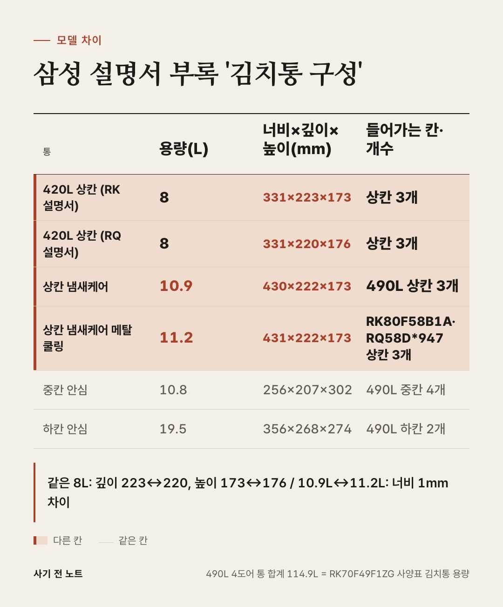

이 게시물은 쿠팡 파트너스 활동의 일환으로, 이에 따른 일정액의 수수료를 제공받습니다.
김치냉장고 김치통 사이즈, 몇 L를 사야 맞을까? 삼성·LG·딤채 찾는 법
김장 전에 김치통을 하나 더 산다면 'L'만 보고 사면 칸에 안 맞을 수 있어요. 삼성은 같은 8L 통도 설명서마다 331×223×173mm와 331×220×176mm로 깊이·높이가 3mm씩 다르고, LG는 같은 용량·같은 칸인데 부품번호가 다른 통이 다섯 쌍이라 값이 두 배 가까이 갈리기도 해요. 삼성은 mm, LG는 부품번호, 딤채는 모델명으로 찾으면 반품 없이 한 번에 맞출 수 있어요.

삼성 김치냉장고라면 몇 L 통인가요?
삼성은 사용 설명서 부록 '김치통 구성' 표에 칸마다 L와 mm, 들어가는 개수가 적혀 있어요.
| 칸 | 용량 | 너비×깊이×높이(mm) | 들어가는 모델(개수) |
|---|---|---|---|
| 상칸 | 11.2L | 431×222×173 | RK80F58B1A·RQ58D*947(3) |
| 상칸 | 10.9L | 430×222×173 | RK70F49F1ZG 등 F49·RQ49D*900·94x(3) |
| 상칸 | 8L | 331×223×173 | RK70F42F2XJ 등 F42(3) |
| 상칸 | 8L | 331×220×176 | RQ42D*99T·94Q·94J·94L(3) |
| 중칸 | 14.9L | 275×265×290 | F58·RQ58(4) |
| 중칸·하칸 | 10.8L | 256×207×302 | F49·RQ49 중칸(4), F58·RQ58 하칸(4) |
| 중칸 | 8.5L | 265×175×274 | F42·RQ42(4, RQ42D*94R은 2) |
| 하칸 | 19.5L | 356×268×274 | F49·RQ49D*900·94x(2) |
| 하칸 | 14.9L | 275×265×290 | F42·RQ49D*90X·RQ42(94L 제외)(2) |
490L 4도어(RK70F49F1ZG 등)라면 중칸 통은 안심 10.8L(256×207×302mm)이고 4개가 나란히 들어가요. 상칸 10.9L 3개 + 중칸 10.8L 4개 + 하칸 19.5L 2개를 더하면 114.9L로, RK70F49F1ZG 사양표의 김치통 용량과 같아요.
10.9L와 11.2L 통은 너비가 1mm 차이인데 용량 표기는 0.3L 차이예요. L 숫자와 실제 크기가 따로 움직이니, 표의 mm와 내 모델명 칸을 같이 보세요.

490L 중칸을 통으로 채우면 얼마 드나요?
11월 16일 쿠팡의 삼성 안심 10.8L는 21,450원(상품평 284개)이었어요. 중칸 4개를 모두 새로 채우면 85,800원, 1L당 약 1,986원이에요. 다만 판매 페이지 상품명은 '안심 10.8L'뿐이라, 설명서 속 256×207×302mm 통과 같은 부품인지는 확인하지 못했어요. 냉장고 모델명을 판매자에게 보내 맞는지 물어보면 끝나요.
490L 4도어 중칸을 채울 통이라면, 삼성 안심 10.8L(11월 16일 쿠팡 21,450원) — 가격·구매처 보기
LG 김치냉장고라면 부품번호가 왜 중요한가요?
11월 16일 LGE.COM 소모품 목록의 김치통 30종 가운데, 같은 용량·같은 칸인데 부품번호가 다른 통이 다섯 쌍(11.3L 중칸, 14.7L 중칸, 17.1L 하칸, 11.6L 하칸, 10.2L 상칸)이었어요. 10.2L 상칸 두 통은 회원할인가 44,100원(AKC73889603)과 22,700원(AKC73369403)으로 21,400원 차이가 나요. 그래서 기준은 'L'이 아니라 상품 페이지 '사용 가능한 모델' 목록에 내 모델이 있느냐예요.
같은 LG 통, 어디서 사는 게 싸요?
중·하칸 겸용 11.5L(AKC67523734)은 상품명에 부품번호가 함께 있어 공식몰과 바로 맞춰 볼 수 있었어요. 11월 16일 쿠팡 30,300원, LGE.COM 회원할인가 23,500원으로 공식몰이 7,800원 낮았어요. 1L당으로는 쿠팡 약 2,635원, 공식몰 약 2,043원이에요. 공식몰 회원 가입이 번거롭지 않다면 공식몰이 싸고, 쿠팡은 배송 편의를 보는 선택이에요.
내 모델이 AKC67523734 목록에 있고 쿠팡 배송이 편하다면, LG 디오스 김치통 11.5L(11월 16일 쿠팡 30,300원) — 가격·구매처 보기
딤채 김치통 사이즈는 어디서 보나요?
위니아 공식 페이지·설명서에서는 김치통 규격 자료를 찾지 못했어요. 김치냉장고 문 안쪽이나 옆면 스티커의 모델명으로 위니아 고객센터에 칸별 규격을 묻는 게 가장 확실하고, 쓰던 통을 잴 때는 뚜껑을 닫은 채로 재세요.

새 통에 담을 때는 얼마나?
삼성전자서비스 안내는 김치를 통의 70~80%만, 국물에 잠기게 담으라고 해요. 10.8L 통이면 70~80%는 약 7.6~8.6L예요.
확인하지 못한 것
딤채 김치통 규격, LG 김치통의 mm, 쿠팡 삼성 10.8L 상품의 호환 모델은 확인하지 못했어요. 숫자는 삼성 RK80F·RK70F(2026년 10월 20일 판)·RQ 4도어 설명서와 11월 16일 LGE.COM 목록·쿠팡 표시값이고, 직접 써 본 후기는 아니에요. 삼성 490L 4도어를 아직 고르는 중이라면 RK70F49F1ZG와 M2Z의 김치통 32.7L 차이를 따로 정리한 글이 있어요.
출처
- 삼성 RK80F·RK70F 사용 설명서(2026년 10월 20일 판): https://downloadcenter.samsung.com/content/PM/202610/20261020150621895/KO/start_here.html
- 삼성 RQ 4도어 사용 설명서: https://downloadcenter.samsung.com/content/PM/202501/20250103100230952/KO/start_here.html
- 삼성전자서비스 김치 보관 안내: https://www.samsungsvc.co.kr/solution/2912267
- LGE.COM 소모품 김치냉장고 목록: https://www.lge.co.kr/category/care-accessories/kimchi-refrigerator